a55a7f5 on main;
the README was updated at 56dea73.
SmogShield forecasts next-day air quality for Lahore, Pakistan. The modelling work has two tasks: (1) predict the next-day AQI category among six classes, and (2) predict next-day PM2.5 concentration as a continuous value. The primary task supports the classification analysis required for the project: accuracy, balanced accuracy, macro precision, macro recall, macro F1, weighted F1, one-vs-rest macro AUC-ROC, a confusion matrix, and per-class precision/recall/F1. Macro metrics are primary because the classes are imbalanced. The regression task reports RMSE, MAE, and R², and compares every model with a persistence baseline.
The guiding rule is that tomorrow's value is unknown at forecast time. Only today's PM2.5, AQI, weather, and calendar information may be used as model inputs. No feature may be derived from shift(-1) or from the test period.
This report is the Deliverable 2 submission for Phase 3 and Phase 4. Sections 4–6 cover Phase 3: the model and baseline protocol, classification results, and regression results. Sections 7–10 cover Phase 4: bias and error analysis, limitations and recommendations, reproducibility, and conclusions. Sections 2–3 document the shared data and preprocessing contract that both phases depend on, and Section 1.2 gives the architecture.
Figure 1 summarises the Deliverable 2 path from raw sources to the report. Phase 2 cleaning and feature building produce the shared daily table. The shared loader applies the chronological split, the Good/Moderate label merge, train-only preprocessing, leakage guards, and the scorable-row mask. Classification and regression then run as separate model tracks. Their final predictions feed the shared metrics, the bias/error analysis, the frozen output files, and the report. A future application layer would consume the same forecasts and charts; it would not retrain models. The web application itself is future work and is not part of this deliverable.
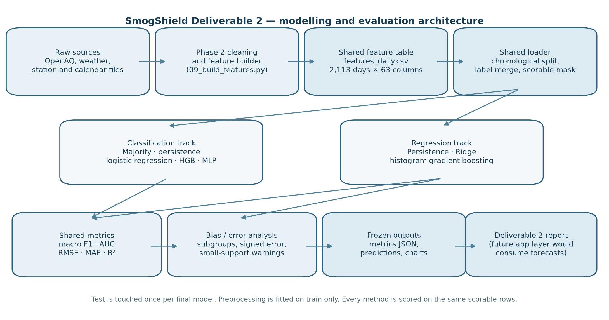
The shared input table is data/processed/features_daily.csv. It contains 2,113 daily rows and 63 columns. It is generated by the Phase 2 feature script and is not committed to Git; it must be restored from the shared Drive or regenerated. The final run used the following split.
| Split | Start | End | Rows | Scorable | Gap (days) |
|---|---|---|---|---|---|
| Train | 2019-05-23 | 2023-06-30 | 1022 | 917 | 7 |
| Validation | 2023-07-14 | 2024-06-03 | 250 | 244 | 7 |
| Test | 2024-07-08 | 2025-02-16 | 223 | 222 | 7 |
The split is chronological, not random. The seven-day gap removes 2023-07-01 through 2023-07-07 and 2024-07-01 through 2024-07-07 so that a next-day target at the end of one period cannot overlap the first rows of the next period. The validation end is 2024-06-03 rather than the configured 2024-06-30 because the remaining June rows do not have a usable next-day target. This is expected.
The split contains 1,022 training rows, 250 validation rows, and 223 test rows. The scorable-row mask, which requires a finite current-day PM2.5 value, leaves 917 training rows, 244 validation rows, and 222 test rows. All methods, including persistence, are scored on the same scorable rows. Six validation rows and one test row are dropped for this reason. Classification and regression each produce 473 prediction rows (250 validation plus 223 test), of which 466 are scorable.
The raw table has seven AQI categories. Good has only nine training rows and zero validation and test rows, so it cannot support a separate class. For modelling, Good is merged into Moderate. This is a label decision, not a deletion: the raw category table still contains all seven categories.
| Category | Days |
|---|---|
| Good | 9 |
| Moderate | 126 |
| Unhealthy for Sensitive | 269 |
| Unhealthy | 647 |
| Very Unhealthy | 256 |
| Hazardous (301-400) | 139 |
| Hazardous (401-500) | 60 |
| Total | 1506 |
After the merge, the six-class support is shown below. Every class has support in every split, so multiclass AUC-ROC is defined. The eight test rows in Good/Moderate and the eleven validation rows in Hazardous 401–500 are small; their per-class precision and recall are noisy, not precise estimates. The two Hazardous bands remain separate in the main analysis.
| Category | Train | Validation | Test | Total |
|---|---|---|---|---|
| Good/Moderate | 109 | 16 | 8 | 133 |
| Unhealthy for Sensitive | 175 | 53 | 34 | 262 |
| Unhealthy | 488 | 80 | 77 | 645 |
| Very Unhealthy | 148 | 47 | 61 | 256 |
| Hazardous (301-400) | 72 | 43 | 24 | 139 |
| Hazardous (401-500) | 30 | 11 | 19 | 60 |
| Total | 1022 | 250 | 223 | 1495 |
Table 2 counts the current-day AQI category over all feature-table rows, while Table 3 counts next-day targets inside the chronological splits. Their totals therefore differ (1,506 versus 1,495).
The shared loader drops date, every target_next_* column, the precomputed *_scaled weather columns, the redundant season string, and year from model inputs. The last choice avoids asking trees to extrapolate to unseen years and avoids unstable linear year trends. Month, day-of-year, and cyclical encodings carry seasonality.
The loader keeps current-day PM2.5, AQI, weather, and calendar features. It one-hot encodes the current AQI category, median-imputes numeric features, adds missing-value indicators, and applies a robust scaler. Imputers and scalers are fitted on the training split only. In the model frames, pm25_lag1 is missing for 13.4% of training rows, 4.0% of validation rows, and 0.4% of test rows, so missing-value indicators are retained rather than treated as pure noise. The loader also raises if a target or precomputed scaled column survives the config lists. The final transformed feature count is 80, from 46 raw features, confirmed by check_setup.
The loader uses the fixed class labels in configs/base.yaml; labels are never inferred alphabetically from the data. This prevents validation or test labels from changing the class order. The optional label merge is applied only to the classification target, before encoding. The final run used seed 42 and train-only fitting throughout.
The classification candidates were majority class, persistence, logistic regression with class weights, histogram gradient boosting (HGB), and an optional small MLP retained only if it improved validation performance. The persistence baseline uses the majority training class code, 2 (Unhealthy), as its fallback when today's category is missing. The MLP was excluded after validation macro F1 of 0.4124 did not exceed HGB's 0.4941.
Hyperparameters were tuned with five-fold TimeSeriesSplit on the raw training frame, with a seven-day gap. Tuning never cross-validated on the already-preprocessed training matrix. The final model was refitted on the training split only, not on train plus validation. The test set was then touched once for the final model. The classification selection metric was validation macro F1 over all six configured labels. The CV score is computed per fold over the classes present in that fold, so it is not directly comparable with the six-label validation score; that caveat is recorded in the metrics file.
| Task | Model | Selected parameters | Validation metric | Status |
|---|---|---|---|---|
| Classification | LogisticRegression | {"C": 0.1, "class_weight": "balanced", "max_iter": 500, "penalty": "l1"} | macro F1 = 0.4665 | completed |
| Classification | HistGradientBoosting | {"l2_regularization": 0.1, "learning_rate": 0.1, "max_iter": 100, "max_leaf_nodes": 31, "min_samples_leaf": 10} | macro F1 = 0.4941 | selected |
| Classification | MLP | {"alpha": 0.01, "early_stopping": true, "hidden_layer_sizes": [128, 64, 32], "learning_rate": "constant", "max_iter": 500, "n_iter_no_change": 15, "validation_fraction": 0.1} | macro F1 = 0.4124 | excluded |
| Regression | Ridge | {"alpha": 10.0} | RMSE = 45.6916 | not selected |
| Regression | HGB | {"learning_rate": 0.05, "max_depth": 3, "max_iter": 200} | RMSE = 45.6243 | selected |
Status “completed” means tuned but not selected; “excluded” means the optional MLP did not beat HGB on validation.
Regression used persistence, Ridge, and histogram gradient boosting, with the same five-fold time-series procedure and seven-day gap. Model selection used validation RMSE. The selected model was refitted on training rows only and evaluated once on test. Persistence is not imputed for missing current-day PM2.5; it is scored on the same scorable rows as the models. The final code calls the metric helper with allow_missing=False for every method. The option allow_missing=True remains reserved for an unfiltered persistence baseline only; the persistence n_dropped values are 6 validation and 1 test, the same rows on which every method is scored.
Table 5 reports validation and test metrics for the majority, persistence, logistic regression, and HGB candidates. HGB was selected on validation macro F1 (0.4941 versus 0.4665 for logistic regression). On test, HGB reached macro F1 0.4780, below persistence's 0.5157. HGB's test accuracy was higher than persistence (0.5856 versus 0.5676), but accuracy is dominated by the larger classes; macro F1 exposes the weaker performance on rare classes.
| Model | Split | Accuracy | Balanced accuracy | Macro precision | Macro recall | Macro F1 | Weighted F1 | AUC-ROC |
|---|---|---|---|---|---|---|---|---|
| Majority class | Validation | 0.3033 | 0.1667 | 0.0505 | 0.1667 | 0.0776 | 0.1411 | -- |
| Majority class | Test | 0.3468 | 0.1667 | 0.0578 | 0.1667 | 0.0858 | 0.1786 | -- |
| Persistence | Validation | 0.5697 | 0.4760 | 0.4772 | 0.4760 | 0.4766 | 0.5691 | -- |
| Persistence | Test | 0.5676 | 0.5157 | 0.5157 | 0.5157 | 0.5157 | 0.5676 | -- |
| Logistic regression | Validation | 0.5287 | 0.4995 | 0.4775 | 0.4995 | 0.4665 | 0.5521 | 0.8842 |
| Logistic regression | Test | 0.5225 | 0.5062 | 0.4673 | 0.5062 | 0.4601 | 0.5337 | 0.8719 |
| HGB (selected) | Validation | 0.5943 | 0.4976 | 0.5049 | 0.4976 | 0.4941 | 0.5824 | 0.8765 |
| HGB (selected) | Test | 0.5856 | 0.4776 | 0.4804 | 0.4776 | 0.4780 | 0.5815 | 0.8886 |
The selected HGB model's test AUC-ROC is 0.8886 and logistic regression's is 0.8719. The one-vs-rest macro AUC is computed from the aligned six-column probability matrix. Rows sum to one within the helper's tolerance. The majority baseline has no probability output, so its AUC is reported as undefined rather than filled with a fake value. HGB's test AUC (0.8886) is higher than its validation AUC (0.8765) even though its test macro F1 is below persistence. AUC measures probability ranking rather than the thresholded label decision, and persistence has no probability output, so the two metrics answer different questions. Persistence's test macro precision, recall, and F1 are all 0.5157, and its weighted F1 equals accuracy (0.5676), because predicted and true class counts coincide exactly on the test rows. This is not a copy error; it is a property of the persistence shift on this series.
| Category | Support | Precision | Recall | F1 |
|---|---|---|---|---|
| Good/Moderate | 8 | 0.375000 | 0.375000 | 0.375000 |
| Unhealthy for Sensitive | 34 | 0.516129 | 0.470588 | 0.492308 |
| Unhealthy | 77 | 0.701299 | 0.701299 | 0.701299 |
| Very Unhealthy | 60 | 0.676923 | 0.733333 | 0.704000 |
| Hazardous (301-400) | 24 | 0.346154 | 0.375000 | 0.360000 |
| Hazardous (401-500) | 19 | 0.266667 | 0.210526 | 0.235294 |
The largest class, Unhealthy, has F1 0.7013, while Very Unhealthy has F1 0.7040. The two Hazardous bands are weaker: 0.3600 and 0.2353. The confusion matrix below shows frequent confusion between Unhealthy for Sensitive and Unhealthy, and between the two Hazardous bands and Very Unhealthy. This is consistent with ordered severity classes and with the class imbalance.
| True | Pred 0 | Pred 1 | Pred 2 | Pred 3 | Pred 4 | Pred 5 |
|---|---|---|---|---|---|---|
| 0 | 3 | 2 | 3 | 0 | 0 | 0 |
| 1 | 4 | 16 | 14 | 0 | 0 | 0 |
| 2 | 1 | 13 | 54 | 6 | 2 | 1 |
| 3 | 0 | 0 | 6 | 44 | 7 | 3 |
| 4 | 0 | 0 | 0 | 8 | 9 | 7 |
| 5 | 0 | 0 | 0 | 7 | 8 | 4 |
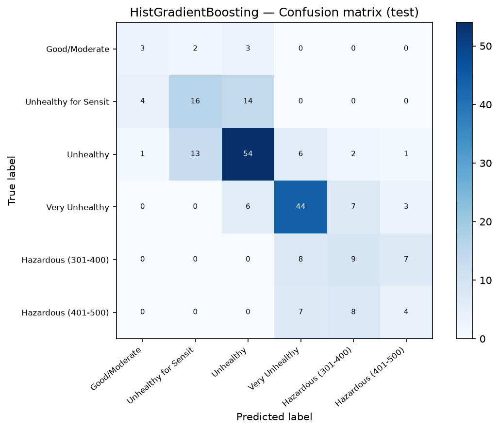
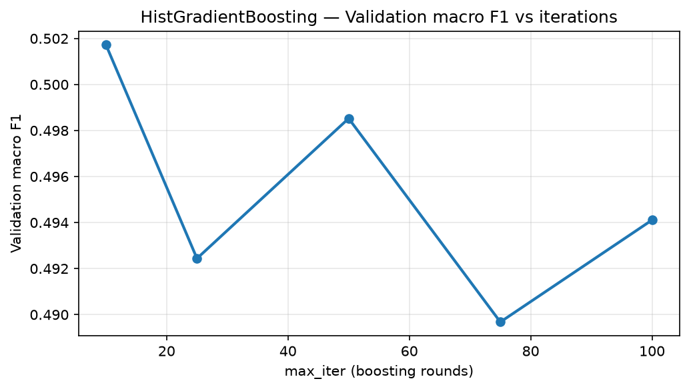
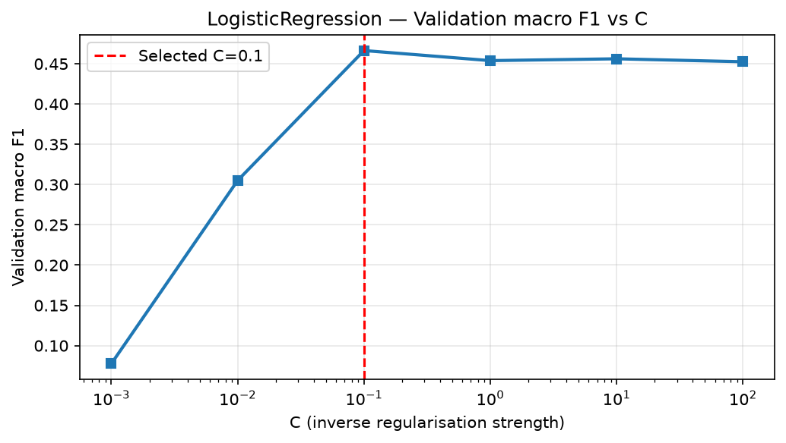
Training curves. A per-epoch training-loss curve exists only for the MLP, which was excluded because its validation macro F1 (0.4124) did not exceed that of HGB (0.4941). For logistic regression (full-batch solver) and HGB (no per-epoch loss recorded in our configuration) we report validation-score curves instead (Figures 3, 4, and 9). Figure 3 is nearly flat (macro F1 between about 0.490 and 0.502), so the iteration count is not a sensitive parameter.
Table 8 reports the regression comparison. On validation, HGB had the lowest RMSE (45.6243), narrowly ahead of Ridge (45.6916); both beat persistence (51.5457) by about 11.4–11.5%. On test, however, HGB reached 64.9198, essentially tied with persistence (64.8175, a 0.10 RMSE gap); its skill score was −0.0016. Ridge reached 62.0956 on test and beat persistence, with skill 0.0420. R² follows the same pattern: Ridge's test R² is 0.7356, HGB's is 0.7110, and persistence's is 0.7119.
This is a genuine validation-to-test reversal, not a reporting error. The selection rule chose HGB on validation RMSE before test was touched. The report keeps that selection and reports the test outcome honestly. It does not switch the final model to Ridge after seeing test.
| Model | Split | RMSE | MAE | R2 | Skill vs persistence | n | Dropped |
|---|---|---|---|---|---|---|---|
| Persistence | Validation | 51.5457 | 33.5298 | 0.7808 | -- | 244 | 6 |
| Persistence | Test | 64.8175 | 39.9777 | 0.7119 | -- | 222 | 1 |
| Ridge | Validation | 45.6916 | 31.8794 | 0.8277 | 0.1136 | 244 | 6 |
| Ridge | Test | 62.0956 | 38.4750 | 0.7356 | 0.0420 | 222 | 1 |
| HGB (selected) | Validation | 45.6243 | 29.9781 | 0.8282 | 0.1149 | 244 | 6 |
| HGB (selected) | Test | 64.9198 | 40.7740 | 0.7110 | -0.0016 | 222 | 1 |
All models are scored on the same 244 validation and 222 test scorable rows; the 6 validation and 1 test rows dropped for missing current-day PM2.5 are not scored.
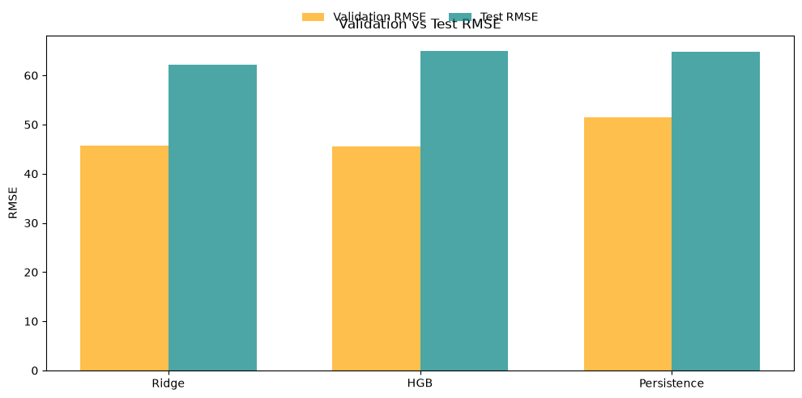
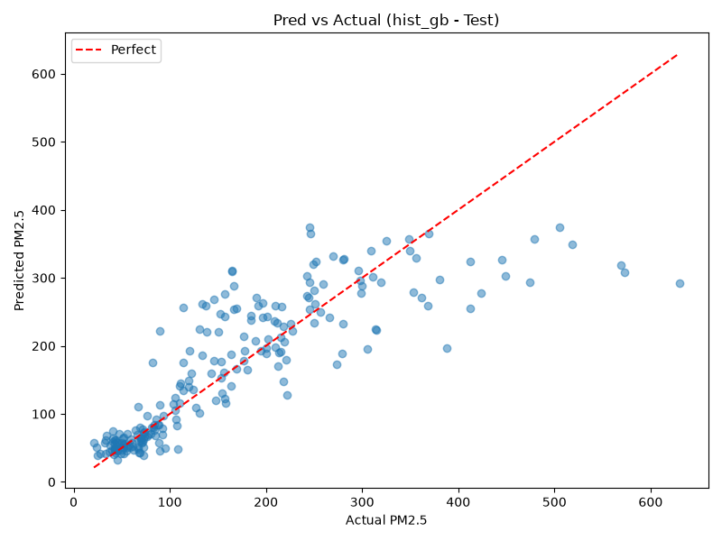
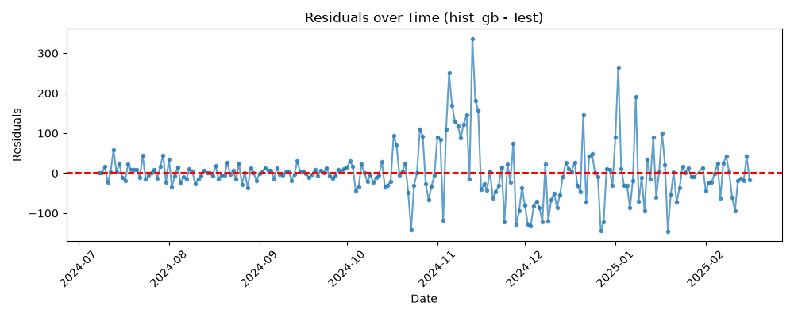
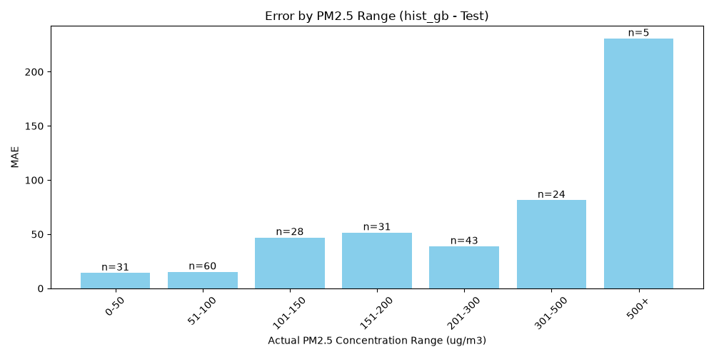
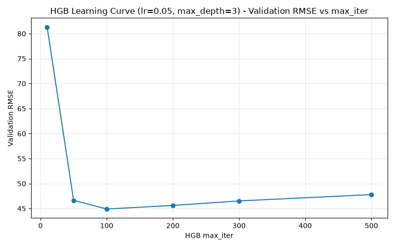
The bias analysis joins the final regression and classification predictions on date and split. It uses 466 joined rows: 244 validation and 222 test. The subgroup table has 47 rows across seven dimensions: AQI category, season, year, weekday versus weekend, Islamic events, public holidays, and PM2.5 severity band. Missing subgroup keys were counted per split and dimension; all counts were zero in the final join.
The joined validation rows contain 25 scorable Ramadan rows and no scorable Eid rows. The feature table flags Eid on 10–12 April and 17–19 June 2024, but the AQI label is missing on those dates; all six dates also lack a next-day target, so they never enter the split. This is a label-coverage limitation, not a calendar-flag gap. The test split has only one Islamic-event group, Normal; no test Ramadan or Eid comparison is therefore possible. Public-holiday test rows number only seven, so the holiday result is marked as small-support. The analysis is environmental and temporal, not demographic: the dataset has one monitoring station and no demographic attributes. It cannot establish fairness across people or neighbourhoods.
| Dimension | Validation missing | Test missing |
|---|---|---|
| AQI Category | 0 | 0 |
| Islamic_Event | 0 | 0 |
| Public_Holiday | 0 | 0 |
| Season | 0 | 0 |
| Severity_Band | 0 | 0 |
| Weekday_Weekend | 0 | 0 |
| Year | 0 | 0 |
Table 10 reports the test subgroups. Positive signed error is y_true − y_pred, so a positive value means under-prediction relative to the observed PM2.5. The most important pattern is the severe-pollution tail. Hazardous 401–500 has RMSE 162.14 and signed error 141.70; the 301–500 severity band has RMSE 99.60 and signed error 75.72; and the 500+ band, with only five rows, has RMSE 242.00 and signed error 230.76. These are large errors, not just noise, although the 500+ estimate is unstable because of its tiny support. Severity bands and AQI-category groups are defined by the observed outcome, so high-severity groups look under-predicted and low-severity groups over-predicted partly by construction. The size of the errors (for example RMSE 99.60 on the 301–500 band), not the sign, is the informative result.
| Dimension | Group | n | RMSE | MAE | Signed error | Accuracy | Macro F1 | Small support |
|---|---|---|---|---|---|---|---|---|
| AQI Category | Good/Moderate | 8 | 25.4601 | 23.6583 | -23.6583 | 0.3750 | 0.5455 | yes |
| AQI Category | Unhealthy for Sensitive | 34 | 12.5892 | 9.8540 | -7.1164 | 0.4706 | 0.6400 | no |
| AQI Category | Unhealthy | 77 | 43.8019 | 27.9535 | -11.1751 | 0.7013 | 0.8244 | no |
| AQI Category | Very Unhealthy | 60 | 59.1430 | 44.7748 | -27.9941 | 0.7333 | 0.8462 | no |
| AQI Category | Hazardous (301-400) | 24 | 53.2085 | 41.5136 | 11.8486 | 0.3750 | 0.5455 | yes |
| AQI Category | Hazardous (401-500) | 19 | 162.1417 | 141.6998 | 141.6998 | 0.2105 | 0.3478 | yes |
| Season | Winter | 76 | 72.3755 | 52.6206 | -17.4306 | 0.6053 | 0.4494 | no |
| Season | Summer | 55 | 19.6486 | 15.0855 | 0.7674 | 0.5091 | 0.4763 | no |
| Season | Autumn | 91 | 75.3234 | 46.4062 | 14.1519 | 0.6154 | 0.4358 | no |
| Year | 2024 | 177 | 63.6013 | 39.2136 | 0.7755 | 0.5763 | 0.4832 | no |
| Year | 2025 | 45 | 69.8649 | 46.9118 | -2.9323 | 0.6222 | 0.4306 | no |
| Weekday_Weekend | Weekday | 158 | 68.3224 | 41.7848 | 1.0546 | 0.6139 | 0.4875 | no |
| Weekday_Weekend | Weekend | 64 | 55.6356 | 38.2786 | -2.5206 | 0.5156 | 0.4276 | no |
| Severity_Band | 0-50 | 31 | 17.6658 | 14.2902 | -12.6398 | 0.4839 | 0.5386 | no |
| Severity_Band | 51-100 | 60 | 26.2778 | 15.2874 | 1.1969 | 0.6333 | 0.5302 | no |
| Severity_Band | 101-150 | 28 | 61.8758 | 47.0172 | -34.7032 | 0.7143 | 0.8333 | yes |
| Severity_Band | 151-200 | 31 | 66.9282 | 51.5369 | -42.0886 | 0.8387 | 0.9123 | no |
| Severity_Band | 201-300 | 43 | 50.0110 | 38.7876 | -8.5917 | 0.5349 | 0.5635 | no |
| Severity_Band | 301-500 | 24 | 99.6015 | 81.4907 | 75.7243 | 0.2083 | 0.2556 | yes |
| Severity_Band | 500+ | 5 | 242.0043 | 230.7646 | 230.7646 | 0.6000 | 0.7500 | yes |
| Islamic_Event | Normal | 222 | 64.9198 | 40.7740 | 0.0239 | 0.5856 | 0.4780 | no |
| Public_Holiday | Normal | 215 | 65.6586 | 41.4275 | -0.3726 | 0.5767 | 0.4680 | no |
| Public_Holiday | Holiday | 7 | 35.3757 | 20.7040 | 12.2017 | 0.8571 | 0.7333 | yes |
Subgroup macro F1 is computed within each subgroup over the true classes present, so it is not comparable across groups or with Table 5. For AQI Category rows, use accuracy (= recall). The full 14-chart bias set is included in figures/; the report shows selected test charts below.
Seasonal errors are also uneven. Winter test RMSE is 72.38 with signed error −17.43, indicating average over-prediction, while autumn RMSE is 75.32 with signed error +14.15, indicating average under-prediction. Summer is much easier (RMSE 19.65). Test 2025 has only 45 rows (1 January–16 February, winter), whereas 2024 has 177 mixed-season rows. The 2025 comparison is therefore confounded with season: RMSE is 69.86 versus 63.60, and macro F1 is 0.4306 versus 0.4832, but this is not a clean temporal comparison. Weekday RMSE is higher than weekend RMSE (68.32 versus 55.64), though weekend macro F1 is lower (0.4276 versus 0.4875).
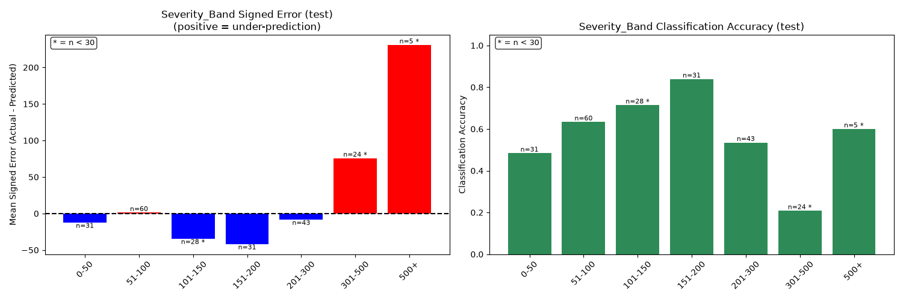
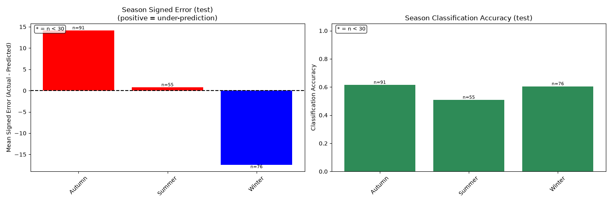
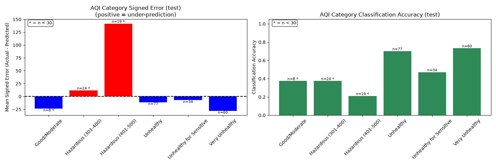
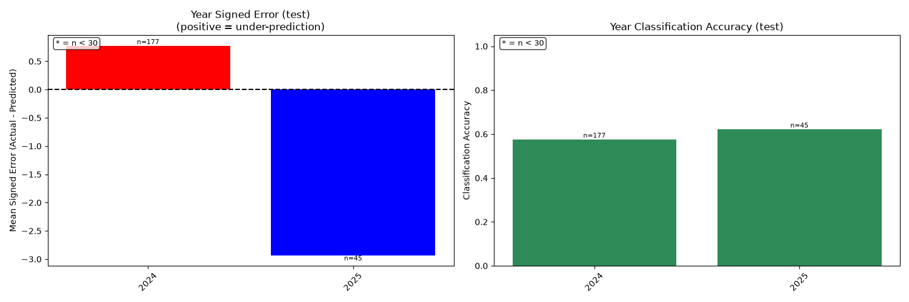
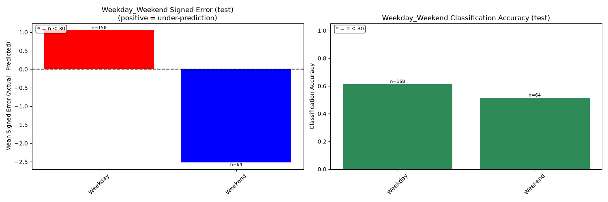
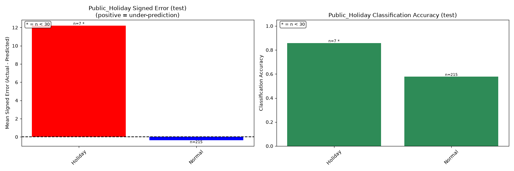
The class mix also shifts across periods. Unhealthy is about 48% of training rows but 32% of validation and 35% of test. The two Hazardous bands together are about 10% of training but 22% of validation and 19% of test. This may reflect seasonal composition, missing training days or targets, or real worsening; the data do not identify a single cause. The later-period under-prediction of severe days is consistent with that shift, but it is not proof of a causal trend.
Recommended next steps are to collect more severe-pollution days, evaluate cost-sensitive or class-balanced variants with a pre-registered validation rule, add calibrated probabilities and prediction intervals, and test on a later period or a second station. Any such change should be selected without using the current test set.
The final results were produced from merge commit a55a7f5 on main; the repository README was updated afterwards (commit 56dea73). The final pipeline was run from the repository root with the commands below.
python -m src.check_setup python -m unittest discover -s tests -t . python -m src.classification python -m src.regression python -m src.bias_analysis
check_setup reported 0 bad next-day PM2.5 values, 0 bad lag-1 values, and 0 bad next-day categories. The unit tests ran 15 tests and passed. Classification completed in 427.92 seconds and regression in 37.61 seconds. The bias analysis then joined the final prediction files.
The classification prediction file has 473 rows and 12 columns; 466 rows are scorable. Its SHA-256 hash is 47D8E0A89FC3F37EA6B74E807DCF566FBDD6D79F734D5A05CFD56124888EB2EB, matching the verified Drive copy. Regression also has 473 prediction rows, 466 scorable.
Dependencies are listed in requirements.txt. The final environment used pandas 3.0.3, scikit-learn 1.9.1, and matplotlib 3.11.2. The seed is 42 from configs/base.yaml. Generated prediction CSVs, metrics JSON, and charts are review artifacts and should not be committed to Git; the data and large artifacts belong on the shared Drive or a release link. No fitted model weights are published: the selected pipelines are refit from fixed seeds by the committed scripts (see the repository README).
Table 11 is the Git-author contribution table: it maps each commit author to the project modules and representative commits they own. The repository history contains only the three project contributors. The Git identities used in the D2 work are Abdul Rehman <arehman4275@gmail.com>, Muhammad Haider Mughal <haiderirfanmm@gmail.com>, and Muhammad Ayub Butt <purestudy83010@gmail.com>. Some earlier commits by the same author also appear under the display name “Haider Mughal” with the same e-mail address. No AI or OpenCode co-author trailer was added.
| Contributor | Student ID | Git identity | D2 contribution | Key modules and representative commits |
|---|---|---|---|---|
| Abdul Rehman | 3059 | Abdul Rehman <arehman4275@gmail.com> | Shared data and evaluation foundation; integration; D2 report | src/data.py; src/evaluate.py; src/check_setup.py; configs/base.yaml; tests/test_evaluate.py; reports/ (b672bfc, 20fa79e, a55a7f5) |
| Muhammad Haider Mughal | 3006 | Muhammad Haider Mughal <haiderirfanmm@gmail.com> | Classification pipeline and tuning | src/classification.py (d311f8e, 5f57987) |
| Muhammad Ayub Butt | 3076 | Muhammad Ayub Butt <purestudy83010@gmail.com> | Regression and bias analysis | src/regression.py; src/bias_analysis.py (fae7490, 6e2448d) |
The primary classification model, HGB, was selected on validation macro F1 and reached 0.4780 on test. It did not beat persistence's 0.5157 macro F1, even though its accuracy was slightly higher. The secondary regression model, HGB, was selected on validation RMSE only; test results were not used to change the selection. Its test RMSE was 64.9198, essentially tied with persistence's 64.8175 (a 0.10 gap and skill −0.0016). Ridge did beat persistence on test with RMSE 62.0956, but switching to it after seeing test would violate the validation-only selection rule. The bias analysis shows that the largest error magnitudes occur on the most severe pollution days; because those groups are defined by the observed outcome, the sign is partly constructed, so the magnitude is the informative result. Seasonal and temporal errors are also uneven. These results are reported as observed, without retuning on the test set.
U.S. Environmental Protection Agency, “Technical Assistance Document for the Reporting of Daily Air Quality — the Air Quality Index (AQI),” EPA-454/B-18-007, September 2018.
World Health Organization, “Ambient (outdoor) air pollution,” fact sheet, 24 October 2024.
R. Majeed et al., “Solving the mysteries of Lahore smog: the fifth season in the country,” Frontiers in Sustainable Cities, vol. 5, art. 1314426, 2024.
F. Pedregosa et al., “Scikit-learn: Machine Learning in Python,” Journal of Machine Learning Research, vol. 12, pp. 2825–2830, 2011.
J. H. Friedman, “Greedy Function Approximation: A Gradient Boosting Machine,” Annals of Statistics, vol. 29, no. 5, pp. 1189–1232, 2001.